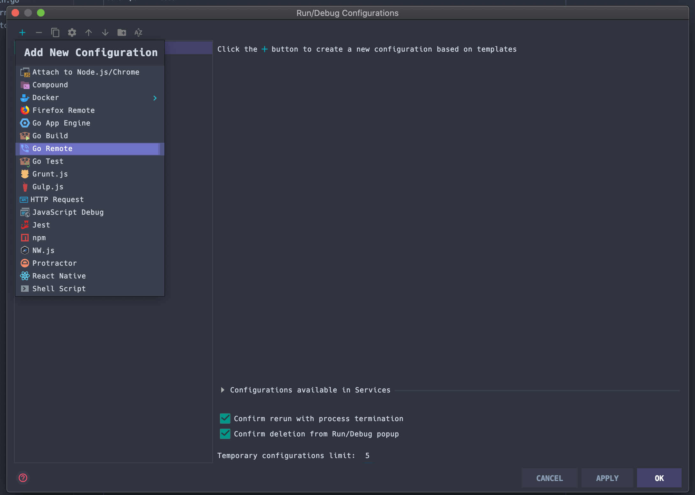
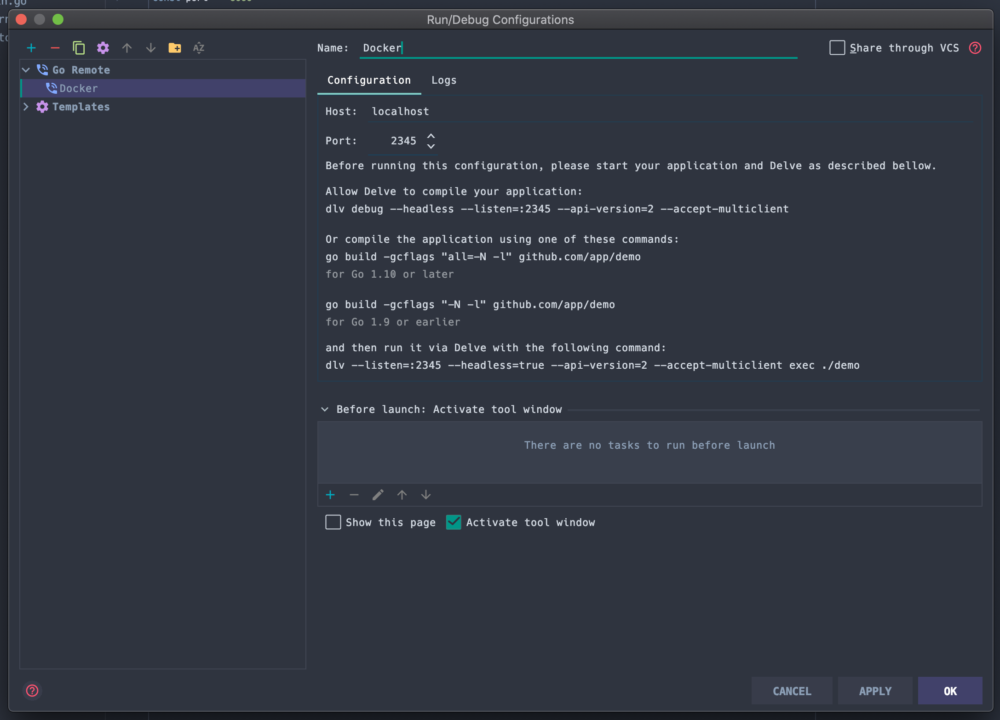
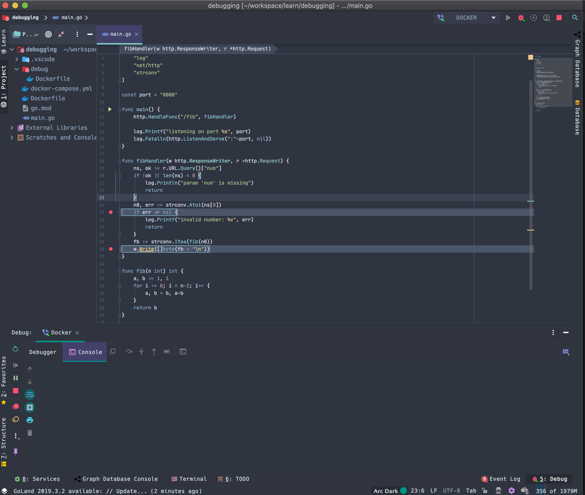
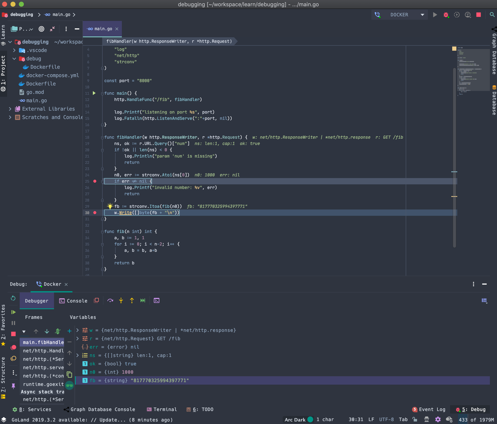
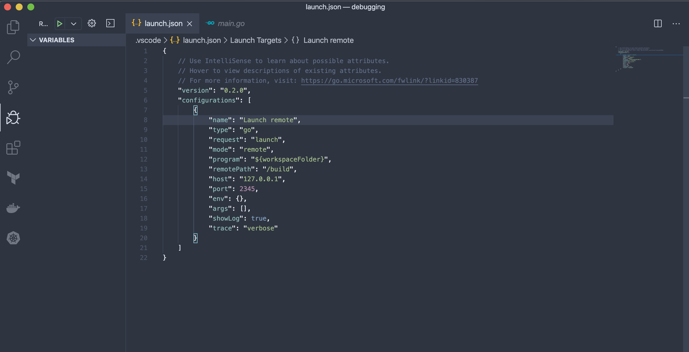
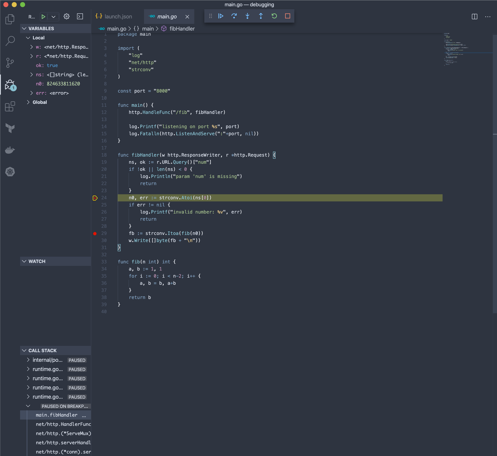

컨테이너 내부 Go 애플리케이션 디버깅하기
Feb 13, 2020 00:00 · 2356 words · 5 minute read
회사에서 Go를 메인으로 서비스를 개발하다보니 당연하게도 Go 애플리케이션을 디버깅 해야하는 상황이 생기게 마련이다. 서버 애플리케이션을 개발하게 되면 디버깅하는 방식이 크게 두 가지로 나뉘는데, 하나는 로컬 서버 디버깅이고 또 하나는 원격 서버 디버깅이다.
서버 애플리케이션은 보통 DB나 캐시 서버 같은 외부 서비스 의존성을 갖기 때문에 로컬 환경 구성시 VM이나 컨테이너를 통해 의존 서비스들을 함께 띄우곤 한다. 우리는 기본적으로 ECS 및 EKS를 기반으로 서비스를 하고 있기 때문에 로컬 환경에서도 도커를 사용하고 있다. 이 때 외부 서비스만 도커로 띄우는 방법이 있고, 서버 애플리케이션까지 모두 도커로 띄우는 방법이 있는데, 나 같은 경우는 로컬 환경과 프로덕션 환경이 (설정을 제외한 모든 것들이) 완전히 일치하는 것을 선호하는 편이라 후자의 방식을 사용하고 있으며 따라서 컨테이너 원격 서버 디버깅을 주로 사용하고 있다.
물론 서버 애플리케이션이 아닌 CLI를 개발할 때에는 (당연히) 로컬 디버깅을 하고 있다.
따라서 이번 포스팅에서는 컨테이너 내부의 Go 애플리케이션을 디버깅하는 방법에 대해 소개하고자 한다.
예제 코드 작성
예제로 사용할 코드는 다음과 같은 n번째 피보나치수를 계산해주는 간단한 서버 애플리케이션이다.
./main.go
package main
import (
"log"
"net/http"
"strconv"
)
const port = "8000"
func main() {
http.HandleFunc("/fib", fibHandler)
log.Printf("listening on port %s", port)
log.Fatalln(http.ListenAndServe(":"+port, nil))
}
func fibHandler(w http.ResponseWriter, r *http.Request) {
ns, ok := r.URL.Query()["num"]
if !ok || len(ns) < 0 {
log.Println("param 'num' is missing")
return
}
n0, err := strconv.Atoi(ns[0])
if err != nil {
log.Printf("invalid number: %v", err)
return
}
fb := strconv.Itoa(fib(n0))
w.Write([]byte(fb + "\n"))
}
func fib(n int) int {
a, b := 1, 1
for i := 0; i < n-2; i++ {
a, b = b, a+b
}
return b
}
위 코드를 main.go로 저장한 다음 같은 디렉토리에서 go mod init calc로 모듈을 초기화 해준다. 예제 코드 준비는 모두 끝났으니 이제 이 애플리케이션을 컨테이너로 띄워보자.
도커 파일 작성
Go 디버깅에는 delve라는 디버거를 사용하며 원격 디버깅을 위해서는 컨테이너 내부에서 디버깅 요청을 받을 수 있는 delve 디버거 서버를 띄워줘야 한다. 또한 디버깅의 정확성을 위해 보통 디버깅용 빌드에서는 컴파일러 최적화 옵션을 끄기 때문에 디버깅 환경으로 구성된 이미지는 프로덕션 환경에서 사용할 수 없다. 따라서 나 같은 경우는 실제 배포용 이미지와 디버깅용 이미지를 분리하여 사용하고 있다.
좀 전에 프로덕션 환경과 완전히 일치하는 환경을 선호한다고 했기 때문에 디버깅용 이미지가 따로 있으면 환경이 달라지는거 아닌가하는 의문이 들 수도 있지만, 이 두 이미지는 (컴파일러 최적화 옵션을 끔으로써 발생하는) 성능 차이를 제외한 다른 모든 시스템 환경은 완전히 동일하기 때문에 내가 우려했던 OS 및 시스템 레벨에서의 환경 및 의존성이 일치하지 않음으로써 발생할 수 있는 문제는 없다.
배포용 이미지
./Dockerfile
# Build binary
FROM golang:1.13 AS builder
WORKDIR /build
ENV CGO_ENABLED=0
COPY go.mod ./
RUN go mod download
COPY . ./
RUN go build .
# Run on scratch
FROM alpine:3.10
WORKDIR /bin
COPY --from=builder /build/calc /bin/
EXPOSE 8000
ENTRYPOINT ["/bin/calc"]
기본적인 Go 바이너리 배포용 이미지이며 이 이미지를 기반으로 디버깅 환경을 갖춘 도커 파일을 작성해보자.
디버깅 이미지
./debug/Dockerfile
# Build binary
FROM golang:1.13 AS builder
WORKDIR /build
ENV CGO_ENABLED=0
COPY go.mod ./
RUN go mod download
COPY . ./
RUN go build -gcflags "all=-N -l" . # -gcflags "all=-N -l"로 컴파일러 최적화 옵션을 끈다.
# Install delve
RUN go get -u github.com/go-delve/delve/cmd/dlv # delve 설치
# Run on scratch
FROM alpine:3.10
WORKDIR /bin
COPY --from=builder /build/calc /bin/
COPY --from=builder /go/bin/dlv /bin/ # delve 가져오기
EXPOSE 8000
EXPOSE 2345 # 디버거 서버 포트
ENTRYPOINT ["/bin/dlv", "--listen=:2345", "--headless=true", "--api-version=2", "--accept-multiclient", "exec", "/bin/calc", "--continue"] # 디버깅 시작
디버깅 이미지에서는 delve 디버거를 설치한 후 바이너리를 직접 실행하는 대신 헤드리스 디버거 서버가 실행하도록 변경 해주면 된다. 다음 명령어는 2345번 포트에서 디버거 서버를 헤드리스 모드로 실행한 뒤 /bin/calc 바이너리를 실행하여 디버깅 세션을 시작하라는 의미이다.
ENTRYPOINT ["/bin/dlv", "--listen=:2345", "--headless=true", "--api-version=2", "--accept-multiclient", "exec", "/bin/calc", "--continue"]
--continue 옵션은 디버깅 프로세스를 곧바로 시작하라는 의미이다. 이 옵션을 주지 않으면 디버깅 요청을 보내줘야만 디버깅 프로세스가 시작된다. 즉, 이 옵션이 없으면 컨테이너가 띄워져도 웹 서버는 실행되지 않으며 2345 포트로 디버깅 요청을 보내줘야만 디버깅 프로세스와 함께 웹 서버가 시작된다.
배포용 이미지와 디버깅 이미지를 함께 띄워두기 위해 직접 빌드하고 실행하는 대신 docker compose를 사용한다.
함께 띄워두는 이유는 실제 서비스 개발 환경과 디버깅 환경을 동시에 사용하기 위해서이다.
컨테이너 실행
./docker-compose.yml
version: "3"
services:
calc:
build:
context: .
ports:
- "8000:8000"
calc-debug:
build:
context: .
dockerfile: ./debug/Dockerfile
ports:
- "8001:8000"
- "2345:2345"
docker-compose up --build -d 명령어로 컨테이너를 띄우고 나면 모든 준비가 끝나며, 최종 디렉토리는 구조는 다음과 같다.
├── Dockerfile
├── debug
│ └── Dockerfile
├── docker-compose.yml
├── go.mod
└── main.go
컨테이너 디버깅
나는 현재 IntelliJ + Go 플러그인 및 Goland를 주 에디터로 사용하고 있으며 서브 에디터로는 Vscode를 사용하고 있기 때문에 이 두 에디터에 대해 각각 원격 디버깅을 하는 방법을 소개하려고 한다.
Goland
먼저 Run > Edit Configuration 메뉴로 디버깅 설정 창을 열어 +에서 Go Remote를 선택한다.

설정 화면이 나오면 Name은 Docker, Host는 localhost 그리고 Port는 2345로 설정해준다.

그 다음 Rnu > Debug 'Docker'를 선택하여 디버깅 창을 연 다음 원하는 라인에 브레이크 포인트를 찍는다.

이제 curl을 사용하여 웹 서버에 요청을 날려보자.
$ curl 'localhost:8001/fib?num=1000'
요청을 날리면 디버깅이 시작되며 디버깅 창에서 각 변수의 값을 확인할 수 있다. 다음은 두 번째 브레이크 포인트까지 진행한 결과이다. (n0: 1000, fib: 817770325994397771)

디버깅 프로세스를 끝내면 요청이 잘 처리되었음을 확인할 수 있다.
$ curl 'localhost:8001/fib?num=1000'
817770325994397771
웹 서버가 띄워져 있기 때문에 원할 때마다 같은 방법으로 디버깅을 반복해서 진행할 수 있다.
Vscode
Vscode에서는 설정이 좀 더 간단하다. 좌측에서 디버깅 메뉴로 들어가면 좌측 상단에 톱니바퀴 모양이 보이는데 해당 버튼을 누르면 launch.json이라는 설정 파일이 열리며 설정값은 다음과 같이 작성해주면 된다.
{
"version": "0.2.0",
"configurations": [
{
"name": "Launch remote",
"type": "go",
"request": "launch",
"mode": "remote",
"program": "${workspaceFolder}",
"remotePath": "/build",
"host": "127.0.0.1",
"port": 2345,
"env": {},
"args": [],
"showLog": true,
"trace": "verbose"
}
]
}

설정이 끝났으면 에디터 창으로 돌아가 브레이크 포인트를 찍은 뒤 Debug > Start Debugging으로 디버깅을 시작한다. 마찬가지로 curl로 요청을 날려보면 다음과 같은 창이 열리며 디버깅이 시작된다.
$ curl 'localhost:8001/fib?num=1000'

마무리
이상으로 컨테이너 내부의 Go 애플리케이션을 디버깅하는 방법을 살펴보았다. 물론 아직 로컬 디버깅 대비 단점이 하나 있는데, 그건 바로 코드 변경시 도커 이미지를 다시 컴파일 해줘야 한다는 것이다. 이 부분은 live reload 테크닉을 통해 개선할 수 있으며 이에 대해서는 다음에 소개해보려고 한다.